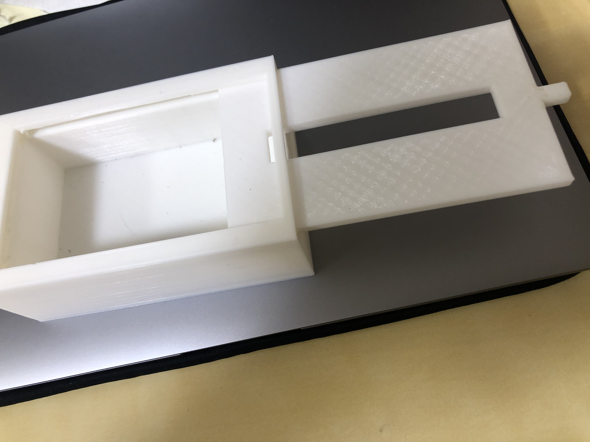
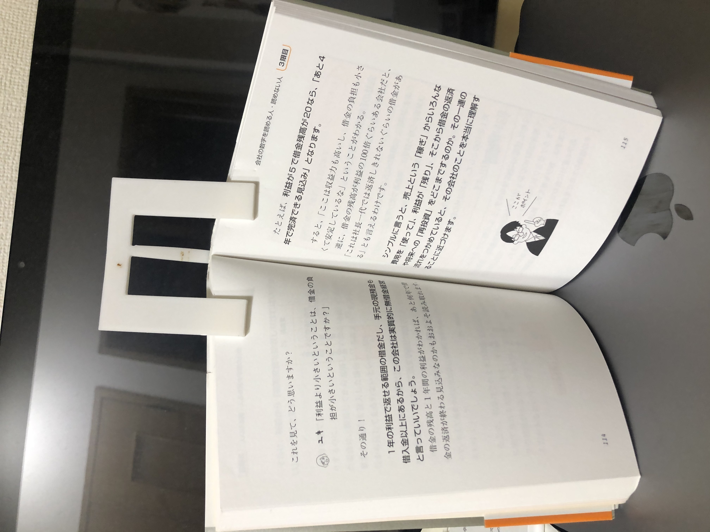
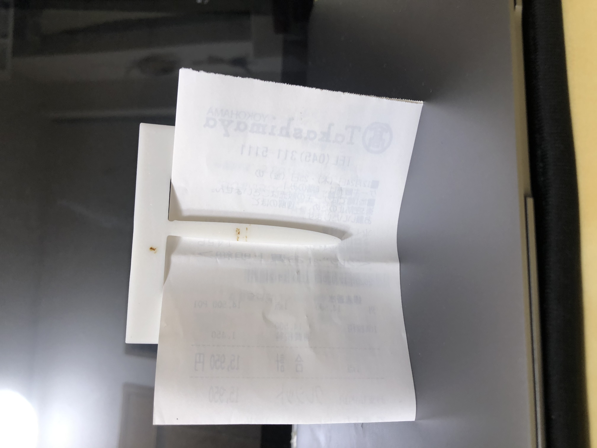

・この作品は、ポケットティッシュ用のティッシュ箱で、箱ティッシュを置くと邪魔になると考えられる「机の上」や、「車の中」に置くことをイメージして作った。
この作品は、試作品ではあるが、見た目に面白みや斬新さ、おしゃれな要素などが入っておらず、この状態では全く完成とは言えない。


・この二つは同じ作品で、壁に紙などを貼るときに、本体自体に傷を付けずに飾れるように、飾りたいものをこのクリップで挟んで、クリップ自体に画鋲などを刺して飾れるというものだ。
機能としては使えるが、見た目の問題と、３Dプリント品じゃないものを使わなければいけないというところに難がある。
本をとめるということにも使えるが、それにしては大きすぎるし、一回一回の手間が大きすぎる。
・ティッシュ箱は、置くだけでも絵になるようなデザインにすることで、昨日だけでなく、デザインとしてでも需要が生まれるはず。
よって、色々なデザインで試してみる。
・クリップは、本を用いて使うのであれば、簡単に挟めて、且つ見た目も「本」というものに合うようなデザインにする。
壁にかけるという機能で作るのであれば、もっとコンパクトで、３Dプリント品だけで成り立つデザインにする。